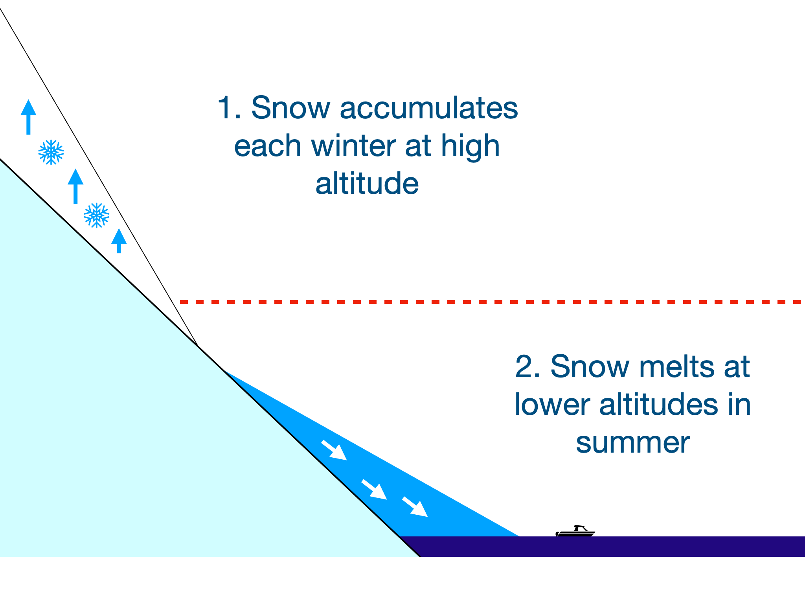
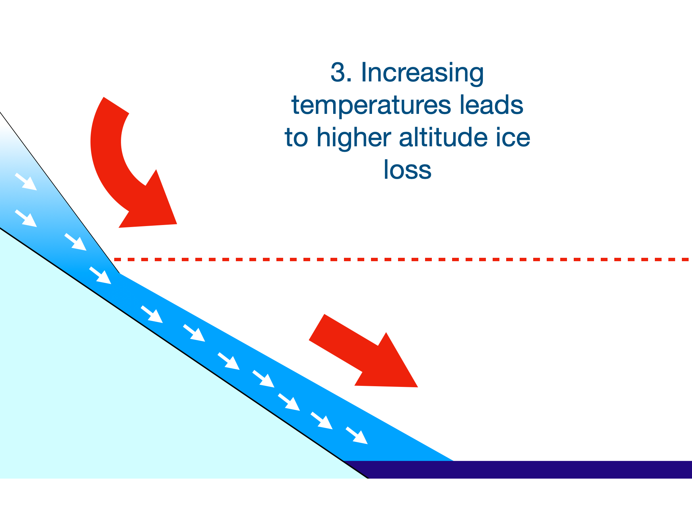
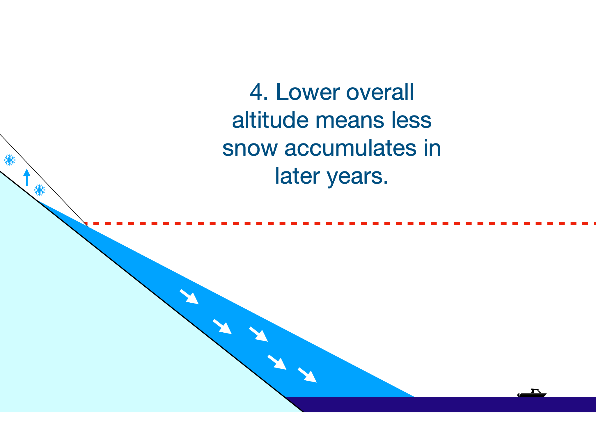

ARTICLE
Approaching a Tipping Point: What has been happening to the Greenland Ice Sheet, and what it means for you
Understanding the Greenland Ice Sheet
As our planet heats up, we face many difficult facts and consequences. One of these is the rising sea levels, a problem with significant global impact - especially for humans, including you.
The Greenland Ice Sheet, beating the Polar ice caps to the largest ice sheet in the Northern Hemisphere, is one of the prominent contributors to this issue globally. But to understand how to fix this, we must first grasp how it happens, and why a solution is crucial to everyone.
Covering an impressive 80% of Greenland with an area of 1.7 million km squared, the Greenland Ice Sheet is nearly 7 times the area of the UK. This much volume is enough to raise sea levels by 7 metres if fully melted, so the human impact on the problems of rising sea levels and ice loss need to be taken seriously and understood by everyone. Based on existing trends on the ice sheet, the risk of rising sea levels in the future is only increasing.
A study found that compared to before 2000, the speed of ice loss in Greenland has tripled. Additionally, the area itself is warming up at twice the global rate, primarily due to greenhouse gas emissions, which is causing the speed of melting to increase to dangerous levels.
Greenland currently loses approximately 267 billion tons per year, accumulating over the past 30 years to a total loss of 30,000 km squared, equivalent to the size of Belgium.
Drag the slider in the top image to see how Greenland looks with/without a sheet of ice.
The above figure shows a slice of Greenland, showing the true extent of the ice mass in comparison to the altitude of ground below (Data (Credit: NASA, Diagram Credit: Patrick Stowell).
Why ice loss matters to you
When we think about rising sea levels, we often think of flooding, but impacts are much more extensive and more complicated than people realise, this is how it will impact the world, and the effects it will have on you.
The ice found in ice sheets is primarily freshwater, meaning there is no salt. When this ice melts into the ocean, it clashes with the saltwater and dilutes the salt levels. Ocean wildlife relies on these conditions, not only because particular species can only survive in saltwater - but because saltiness influences the ocean’s currents. For the wildlife, this will mean that they may get forced into environments they are not suited for, these currents also directly impact fishing communities. These communities rely on currents bringing them food and therefore their livelihood.
Other natural systems that are impacted are rainfall patterns and even events such as hurricanes. This is because the AMOC (Atlantic Meridional Overturning Circulation), which is the current responsible for distributing heat throughout the Atlantic, will cause water around the East Coast of America to get warmer, meaning stronger hurricanes will form. The changes in rainfall patterns will lead to more unreliable weather, creating more potential droughts and flooding.
The human impacts do not stop there. As our seas rise, countries lying on low ground, such as the Netherlands, Bangladesh and the Maldives will face pressure like never before. These countries can prepare. For example, Dutch infrastructure in flood defences is strong, having developed original systems, but countries with lower income will struggle against the water due to a lack of funds or resources.
People will be required to relocate to higher ground, causing population surges that some communities may be unable to accommodate, meaning mass migration and overpopulation.
To summarise, in the short term the ice sheet will experience an increase in water runoff into its surrounding oceans, which leads to the potential collapse of larger current systems, and eventually full melting of the ice sheet.
Approaching a tipping point
There are plenty of reasons to worry, but this is not inevitable. For complete loss of the ice sheet to be certain, the ice sheet needs to cross what is known as a tipping point. A tipping point describes the conditions where ice loss is irreversible.
As for the GIS, this is where the ice sinks to the point where the water is too warm to stop melting, and any additional snowfall will not help. If this happens, it will not stop until all the ice is gone, inevitably leading to an eventual loss of the entire ice sheet.



Tipping points are not just used to describe the Greenland Ice Sheets, but cover 25 systems globally, including the loss of coral reefs and the health of the Amazon.
These points may seem daunting, but work is being done, not only through ARIA’s programme on monitoring tipping points, but researchers globally are working to monitor and prevent this. If people start actively helping our environment, it can slow down or stop problems from happening.
For more information, check out the work done by the Global Tipping Points group.